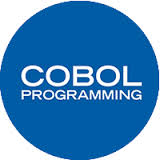

COBOLAbout COBOLCOBOL is a compiled English-like computer programming language designed for business use. It is imperative, procedural and, since 2002, object-oriented. COBOL is primarily used in business, finance, and administrative systems for companies and governments. COBOL is still widely used in legacy applications deployed on mainframe computers, such as large-scale batch and transaction processing jobs. But due to its declining popularity and the retirement of experienced COBOL programmers, programs are being migrated to new platforms, rewritten in modern languages or replaced with software packages. Most programming in COBOL is now purely to maintain existing applications. HistoryIn the late 1950s, computer users and manufacturers were becoming concerned about the rising cost of programming. A 1959 survey had found that in any data processing installation, the programming costs $800,000 on average and that translating programs to run on new hardware would cost $600,000. At a time when new programming languages were proliferating at an ever increasing rate, the same survey suggested that if a common business-oriented language were used, conversion would be far cheaper and faster. In April 1959, representatives from academia, computer users and manufacturers met at the University of Pennsylvania to organize a formal meeting on common business languages. Representatives included Grace Hopper, inventor of the English-like data processing language FLOW-MATIC CompatibilityCOBOL was intended to a be a highly portable, "common" language. COBOL-85 was not fully compatible with earlier versions, and its development was controversial. Joseph T. Brophy, the CIO of Travelers Insurance, spearheaded an effort to inform users of COBOL of the heavy reprogramming costs of implementing the new standard. As a result, the ANSI COBOL Committee received more than 2,200 letters from the public, mostly negative, requiring the committee to make changes. On the other hand, conversion to COBOL-85 was thought to increase productivity in future years, thus justifying the conversion costs.  Click on the Image to view the complete COBOL programming Tutorial |